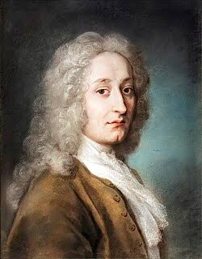
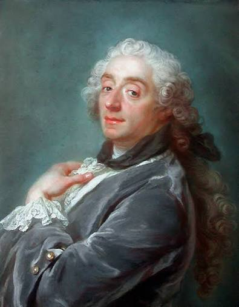
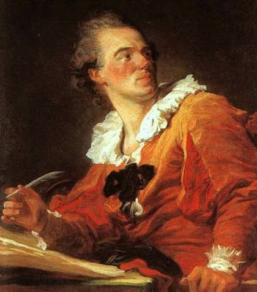
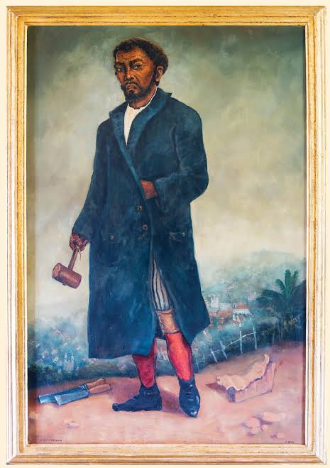

Antoine Watteau
Pintor francês, criador das festas galantes e autor de Peregrinação à Ilha de Citera.

Pintor francês, criador das festas galantes e autor de Peregrinação à Ilha de Citera.

Pintor de cenas mitológicas e pastoris, favorito de Madame de Pompadour na corte de Luís XV.

Autor de O Balanço, símbolo da leveza e da sensualidade do Rococó.

Escultor e arquiteto de Minas Gerais, autor dos Profetas de Congonhas e da Igreja de São Francisco de Assis, em Ouro Preto.
O Rococó surgiu na França no início do século XVIII, na corte de Luís XV, como um estilo mais leve, elegante e ornamental que o Barroco. Suas obras exploram cenas de festas galantes, amores e paisagens pastorais, em cores suaves e composições graciosas, refletindo o gosto da aristocracia.
A afinidade com o Arcadismo está nos temas pastorais e amorosos e na idealização da natureza. Em Minas Gerais, o Rococó mineiro marcou a arquitetura e a escultura religiosas do fim do século XVIII, com artistas como Aleijadinho e Mestre Ataíde.